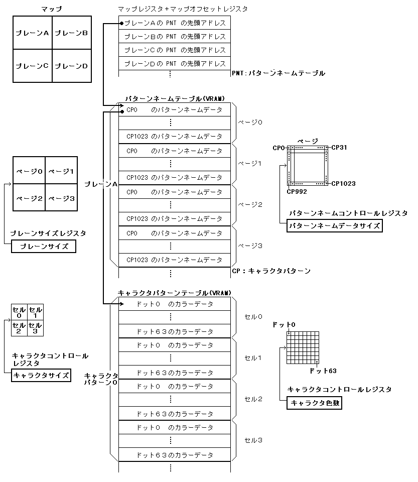

★
HARDWARE Manual★
VDP2ユーザーズマニュアル★
第４章 スクロール画面
★
HARDWARE Manual★
VDP2ユーザーズマニュアル★
第４章 スクロール画面
図4.1 セル形式のスクロール画面の構成
ドットのカラーデータをVRAMにキャラクタパターンテーブルとして格納したものがセルデータとなります。カラーデータはキャラクタ色数により4、8、16、または32ビットになります。セルデータを1または4個並べたものがキャラクタパターンデータになります。キャラクタのパターンネームデータ(キャラクタパターンデータのアドレス)をパターンネームテーブルとして格納したものが、ページデータとなります。ページデータを1、2、または4個並べたものがプレーンとなります。マップは、パターンネームテーブルの先頭アドレスをマップレジスタとマップオフセットレジスタに指定します。セル形式のスクロール画面の構成とデータの設定の対応を図4.2に示します。
図4.2 セル形式のスクロール画面の構成とデータの設定の対応

図4.3 ビットマップ形式のスクロール画面の構成
マップオフセットレジスタ ┌────────┐ キャラクタコントロールレジスタ │マップオフセット│→┌───────────┐ ┌─────────┐ └────────┘ │ドット０のカラーデータ│←│ キャラクタ色数 │ ├───────────┤ └─────────┘ │ │ │ │ │ │ ビットマップ形式 │ │ ┌───┬───┐ │ │ │ │ │ │ │ │ │ │ │ ビットマップ │ ┌→├───┼───┤ │ │ │ │ │ │ │ │ │ │ │ │ │ │ │ └───┴───┘ │ │ │ │ │ │ │ │ │ │ │ │ └───────────┘ │ │キャラクタコントロールレジスタ │ ┌─────────┐ └─┤ビットマップサイズ│ └─────────┘
★HARDWARE Manual
VDP2ユーザーズマニュアル★
第４章 スクロール画面